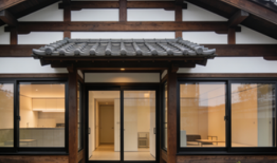

東山区（Higashiyama-ku）賃貸情報
東山区は京都東部に位置し、清水寺・祇園・八坂神社といった京都を代表する観光地が集中するエリア。古い町並みが残る祇園は舞妓・芸妓の活躍する場所として知られ、伝統的な建築物が多い。
鴨川東岸のエリアは景観が良好で、春の桜・秋の紅葉が見られる物件が人気。ただし観光シーズンは大勢の観光客で混雑し、夜間も騒音が発生する場合がある。物件は古民家を改装したものから、現代的なマンションまで多様だが、築年の古い物件が多いのが特徴。
東山区の特徴
- 特徴：観光名所が集中・伝統的な町並みが残る
- メリット：文化体験が豊富・景観が良好
- デメリット：観光客が多く混雑する・物件の築年が古い
- 賃料例：1K約70,000円〜、1LDK約95,000円〜、古民家改装物件約150,000円〜
推奨物件タイプ

祇園徒歩8分 1K：約72,000円。古民家を改装した物件で、畳の部屋と現代的な設備が融合した雰囲気。
清水五条駅徒歩10分 1LDK：約88,000円。低層マンションの物件で、鴨川の景色を望む。駐車場が付属する。
八坂神社近隣 2LDK：約135,000円。伝統的な塀のついた物件で、庭付きで緑が多い。文化的な雰囲気がある。